Bench-Final
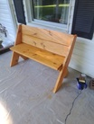
Simple and clean project. All you need is some 2x8s and a circular
saw.
Bench-1
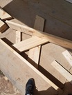
Coming along, making sure I got the angles right 📐
Bench-2
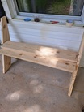
Once I got the angles and sizes correct, the rest is easy.
Bench-3
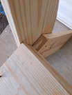
Wood glue is very strong but: wood cannot be wet or painted, or
pressure-treated -AND- you cannot glue end-grain.
Bench-4
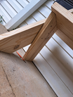
Checking for any glue squeeze-out or splinters.
Bench-5
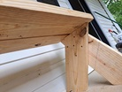
Checking for any glue squeeze-out or splinters.
Birdhouse
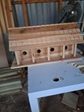
Birdhouse: fussy work. The "tiles" are just a horizontal wood pieces
with notches cut in.
Blanket Ladder
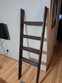
You just need a couple of 1x4s and a saw. Make doubly sure the stain
dries completely before using (ask me how I know.)
Wooden Bucket 1
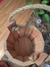
Wooden bucket following a YT clip.
Wooden Bucket 2
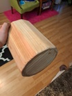
Another pic.
Saw Horses
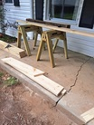
Saw horses. Don't use pressure-treated wood like I did, not worth
inhaling sawdust.
Concealment Shelf 1
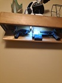
Gun concealment shelf with secret compartment. A project above my
skill level, a lot of angles and bevels measuring, special FOB
hardware and lights, but I was proud of the final result.
Concealment Shelf 2
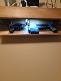
Another pic.
Trellises 1
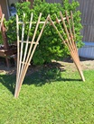
These trellises are easy to make, but you must have a table saw -
do not attempt ripping wood with circular saw.
Trellises 2
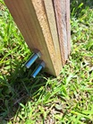
How the bottom is secured with carriage bolts.
Trellises 3
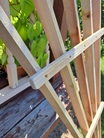
Close-up of screws.
Garden Bed 1
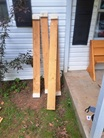
A simple garden bed: you just need a few fence pickets and a scrap
2x4.
Garden Bed 2
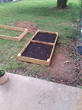
Too shallow. You want it at least 12"-16" deep, or flowers won't be
able to grow up straight. So, make it 2-3 pickets deep. And to avoid
overspending $ on soil, just mix it 60/40 with whatever awful clay
soil this is.